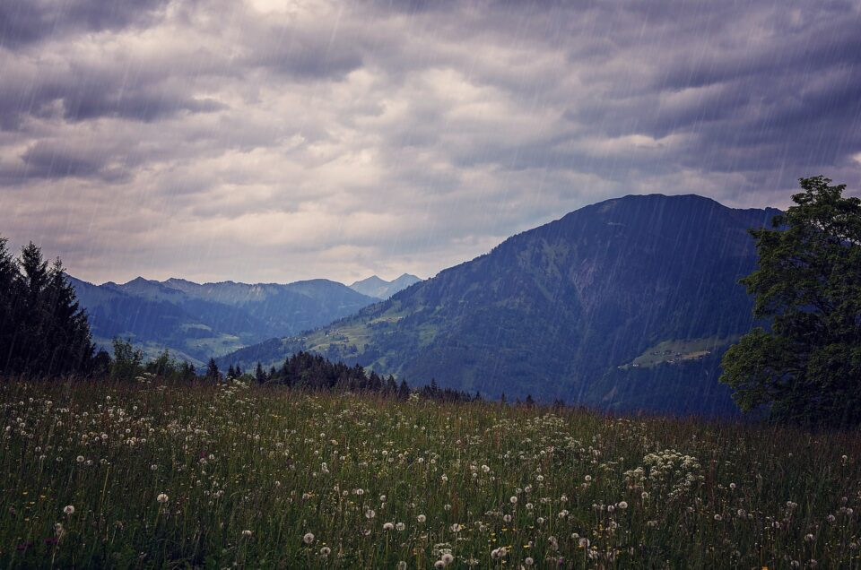
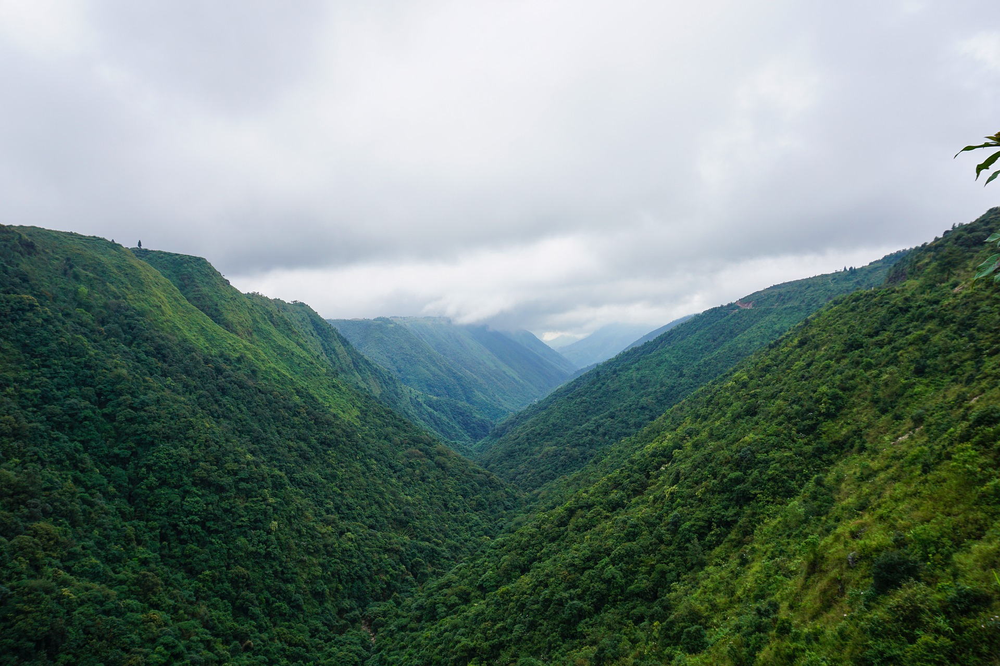

Are you a Nature Lover? Then Cherrapunji can become one of the breathtaking options for your upcoming holidays. Here is an ultimate guide that will help you to traverse through the less crowded yet spectacularly beautiful place located in North East India. Read on to get all the essential information that will help you to place the trip.
Why Is Cherrapunji Famous?
Locally known as Sohra, Cherrapunji is also known as the abode of clouds. Tucked into the lap of the serene Khasi Hills, Cherrapunji is located right in the middle of Meghalaya. The pristine nature and the serene beauty of the valleys will soothe your eyes the moment you step in Meghalaya. The swirling rivers, floating clouds, and the breathtaking waterfalls will embrace your soul with their unabashed beauty.
Even though Meghalaya is breathtakingly beautiful, the beauty of Chrrapunji is of another level. The yearlong rainfall has boosted the growth of the forest and trees in general. Once you come here, you will feel as if nature is beckoning you to explore her depth. The beauty of Cherrapunji not only leaves you breathless but also evokes deep respect for Mother Nature.
It is the incessant rainfalls that have made this place famous to the world. Unlike most places across the world, rain here is not measured in millimetres. The people of his small village measures rainfall in feet. The small town once even secured a place in the Guinness Book for being the wettest place in the world. Even though Mawsynram has snatched that crown from the town, it still holds the record of highest recorded rainfall in a single year.
If you think that the stunning scenic beauty is the only thing that Cherrapunji offers, think again. The double-decker living root bridge is yet another wondrous thing that Cherrapunji offers to travelers. Invented and constructed by the aboriginal tribes, these bridges are a fine specimen of excellent bioengineering. You have to travel to the village Nongrighat to see this unique bride. Needless to say, you do not get to see these types of bridges anywhere across the world.
Apart from the famous bridges, there are lots of other not so famous root bridges, waterfalls, caves, and treehouses in Cherrapunji which you can visit. Among all the falls, the Nohkalikai waterfalls is a must-visit place. Plunging from the reefs of the Khasi hills, this falls is the tallest waterfall of India and the 4th highest one across the world.
History
Even though most people are not aware of it, but Cherrapunji has a long historical legacy. From the 16th Century to 18th Century the Syiems used to rule the land. The term Syiem means ruler or chief. The name of the last significant Syiem of Khasi Hills was Tirot Sing. In 1883, after the demise of Tirot Singh, the rule of the land goes to the British authorities.
It was Britishers who changed the name Sohra into Chrrapunji. Local legends indicate that British rulers were not able to pronounce Sohra properly. They tend to pronounce it as Churra. Over time, this mispronunciation became Cherrapunji, thus changing the name of the land in the process. Recently, the Government of Meghalaya has changed the name of Cherrapunji and renamed it Sohra.
Geography
If you want to know Cherrapunji like the back of your hand, you have to learn its geography first. Even though the Khasi Hills do not look like it, the town is located about 4869 feet above the sea level. Cherrapunji sits atop a plateau that is about 600 meters higher than the surrounding valleys. This extra height enables Cherrapunji to offer such ethereal sights to the travelers.
From Cherrapunji, one can even see the plain lands of Sylhet of neighboring Bangladesh. Here, no matter where you go and where you look, you will only see greenery. Cherrapunji is also home to diverse plants and vegetations. The subtropical forest of Meghalaya is, in fact, one of the oldest forests in the world. The best thing about these forests is that it is largely still untouched. This gives the modern travelers a unique chance to revere and love the beauties of Mother Nature, which we are obliterating at a blinding rate in the rest of the world. For travelers who love nature and want to get rejuvenated, Cherrapunji offers a piece of heaven.
Weather and Rainfall
As we have already told, when it comes to rainfalls, the weather here is pretty consistent. Right now, Cherrapunji holds two different Guinness world records; one for experiencing the maximum amount of rainfall in a year and the other one is for recording maximum rainfall in a month. As it receives both the south-west winds as well as the North East winds, the monsoon dominates the rest of the seasons.
Thanks to the dominating monsoons, Cherrapunji has retained its lush green beauty for years. Here, you can spend hours sitting at the balcony, sipping piping hot coffee while taking in the misty beauty of soaked hills. If you are a bit adventurous, then you can wrap up a raincoat and go for a walk. The crystal clear streams, intriguing trekking routes and the mesmerizing natural caves will not disappoint you. Cherrapunji is the perfect place for forgetting all the stress of daily life and soaking in the intoxicating energy of nature.
Incessant rainfall can dampen the mood of a sunny weather lover; monsoon is the best season to visit Cherrapunji if you want to see the waterfalls at their full might. This might be the only time when you can see the seven streams of the seven sisters’ fall gushing from the cliff.
Summer
Summer starts here in March and stretches till May. Unlike the rest of India, summer is not scorching here. With pleasant temperature and moderate rains, summer could be the best time for you to travel here.
Winter
The rain stops only when winter arrives. While you can experience a spell or two of rain during this time, winter is generally considered as a dry month here. The weather becomes chilly during this time as temperature drops significantly. However, this is the only season when you can visit scenic places without caring about Umbrella or Raincoats.
Clothing Guide
Like visiting most of the hill stations, you should carry light woolen clothes in summer and the heavy ones if you are traveling in winter months. However, don’t forget to carry a raincoat or umbrella with you irrespective of the time of the year.
Even though monsoon is the best time to visit Cherrapunji if you want to witness the roaring beauty of the waterfalls, Cherrapunji greets the traveler with its astounding beauty every season. So, if you want to take a break from the maddening city life, pack your bags and visit Cherrapunji to revel in the serenity of nature.